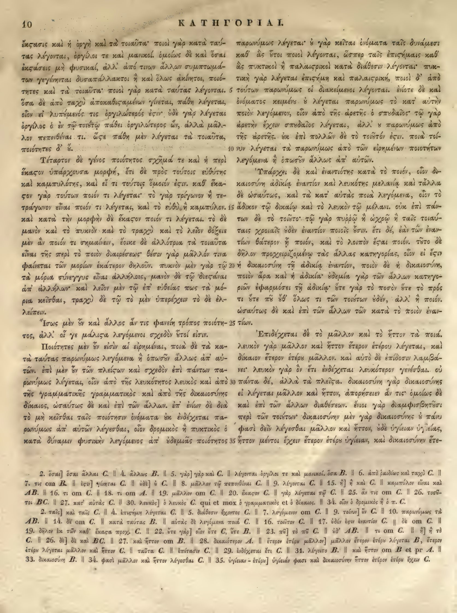

10a
| 1 | ἔκστασις καὶ ἡ ὀργὴ καὶ τὰ τοιαῦτα· ποιοὶ γὰρ κατὰ ταύ- | 0.95 |
|---|---|---|
| 2 | τας λέγονται, ὀργίλοι τε καὶ μανικοί. ὁμοίως δὲ καὶ ὅσαι | 0.95 |
| 3 | <choice><sic>ἐκςάσεις</sic><corr>ἐκστάσεις</corr></choice> μὴ φυσικαί, ἀλλ’ ἀπό τινων ἄλλων συμπτωμά- | 0.95 |
| 4 | των γεγένηνται δυσαπάλλακτοι ἢ καὶ ὅλως ἀκίνητοι, ποιό- | 0.95 |
| 5 | τητες καὶ τὰ τοιαῦτα· ποιοὶ γὰρ κατὰ ταύτας λέγονται. | 0.95 |
| 6 | ὅσα δὲ ἀπὸ ταχὺ <choice><sic>ἀποκαθιςαμένων</sic><corr>ἀποκαθισταμένων</corr></choice> γίνεται, πάθη λέγεται, | 0.95 |
| 7 | οἷον εἰ λυπηθείς τις ὀργιλώτερος ἔστιν· οὐδὲ γὰρ λέγεται | 0.95 |
| 8 | ὀργίλος ὁ ἐν τῷ τοιούτῳ πάθει ὀργιλώτερος ὤν, ἀλλὰ μᾶλ- | 0.95 |
| 9 | λον πεπονθέναι τι. <choice><sic>ὥςε</sic><corr>ὥστε</corr></choice> πάθη μὲν λέγεται τὰ τοιαῦτα, | 0.95 |
| 10 | ποιότητες δ’ οὔ. | 0.95 |
| 11 | Τέταρτον δὲ γένος ποιότητος σχῆμά τε καὶ ἡ περὶ | 0.95 |
| 12 | <choice><sic>ἕκαςον</sic><corr>ἕκαστον</corr></choice> ὑπάρχουσα μορφή, ἔτι δὲ πρὸς τούτοις εὐθύτης | 0.95 |
| 13 | καὶ καμπυλότης, καὶ εἴ τι τούτοις ὅμοιον ἔστιν. καθ’ ἕκα- | 0.95 |
| 14 | στον γὰρ τούτων ποιόν τι λέγεται· τὸ γὰρ τρίγωνον ἢ τε- | 0.95 |
| 15 | τράγωνον εἶναι ποιόν τι λέγεται, καὶ τὸ εὐθὺ ἢ καμπύλον. | 0.95 |
| 16 | καὶ κατὰ τὴν μορφὴν δὲ <choice><sic>ἕκαςον</sic><corr>ἕκαστον</corr></choice> ποιόν τι λέγεται. τὸ δὲ | 0.95 |
| 17 | μανὸν καὶ τὸ πυκνὸν καὶ τὸ τραχὺ καὶ τὸ λεῖον δόξειε | 0.95 |
| 18 | μὲν ἂν ποιόν τι σημαίνειν, ἔοικε δὲ ἀλλότρια τὰ τοιαῦτα | 0.95 |
| 19 | εἶναι τῆς περὶ τὸ ποιὸν διαιρέσεως· θέσιν γάρ μᾶλλόν τινα | 0.95 |
| 20 | φαίνεται τῶν μορίων ἑκάτερον δηλοῦν. πυκνὸν μὲν γάρ τῷ | 0.95 |
| 21 | τὰ μόρια σύνεγγυς εἶναι ἀλλήλοις, μανὸν δὲ τῷ διεσπᾶ- | 0.95 |
| 22 | σθαι ἀπ’ ἀλλήλων· καὶ λεῖον μὲν τῷ ἐπ’ εὐθείας πως τὰ μό- | 0.95 |
| 23 | ρια κεῖσθαι, τραχὺ δὲ τῷ τὸ μὲν ὑπερέχειν τὸ δὲ ἐλ- | 0.95 |
| 24 | λείπειν. | 0.95 |
| 25 | Ἴσως μὲν οὖν καὶ ἄλλος ἄν τις φανείη τρόπος ποιότη- | 0.95 |
| 26 | τος, ἀλλ’ οἵ γε <choice><sic>μάλιςα</sic><corr>μάλιστα</corr></choice> λεγόμενοι σχεδὸν τοῖοί εἰσιν. | 0.95 |
| 27 | Ποιότητες μὲν οὖν εἰσὶν αἱ εἰρημέναι, ποιὰ δὲ τὰ κα- | 0.95 |
| 28 | τὰ ταύτας παρωνύμως λεγόμενα ἢ ὁπωσοῦν ἄλλως ἀπ’ αὐ- | 0.95 |
| 29 | τῶν. ἐπὶ μὲν οὖν τῶν πλείσων καὶ σχεδὸν ἐπὶ πάντων πα- | 0.95 |
| 30 | ρωνύμως λέγεται, οἷον ἀπὸ τῆς λευκότητος λευκὸς καὶ ἀπὸ | 0.95 |
| 31 | τῆς γραμματικῆς γραμματικὸς καὶ ἀπὸ τῆς δικαιοσύνης | 0.95 |
| 32 | δίκαιος, ὡσαύτως δὲ καὶ ἐπὶ τῶν ἄλλων. ἐπ’ ἐνίων δὲ διὰ | 0.95 |
| 33 | τὸ μὴ κεῖσθαι ταῖς ποιότησιν ὀνόματα οὐκ ἐνδέχεται πα- | 0.95 |
| 34 | ρωνύμως ἀπ’ αὐτῶν λέγεσθαι, οἷον δρομικὸς ἢ πυκτικὸς ὁ | 0.95 |
| 35 | κατὰ δύναμιν φυσικὴν λεγόμενος ἀπ’ οὐδεμιᾶς ποιότητος | 0.95 |
10b
| 1 | παρωνύμως λέγεται· ὃ γὰρ κεῖται ὀνόματα ταῖς δυνάμεσι | 0.95 |
|---|---|---|
| 2 | καθ' ἃς ἕτοι ποιοί λέγονται, ὥσπερ ταῖς ἐπιστήμαις καθ' | 0.95 |
| 3 | ἃς πυκτικοί ἢ παλαισρικοὶ κατὰ διάθεσιν λέγονται· πυκ- | 0.95 |
| 4 | τικὴ γὰρ λέγεται ἐπιστήμη καὶ παλαισρική, ποιοὶ δ' ἀπὸ | 0.95 |
| 5 | τούτων παρωνύμως οἱ διακείμενοι λέγονται. ἐνίοτε δὲ καὶ | 0.95 |
| 6 | ὀνόματος κειμένου ὃ λέγεται παρωνύμως τὸ κατ' αὐτὴν | 0.95 |
| 7 | ποιὸν λεγόμενον, οἷον ἀπὸ τῆς ἀρετῆς ὁ σπουδαῖος· τῷ γὰρ | 0.95 |
| 8 | ἀρετὴν ἔχειν σπουδαῖος λέγεται, ἀλλ' οὐ παρωνύμως ἀπὸ | 0.95 |
| 9 | τῆς ἀρετῆς. ἐπὶ πολλῶν δὲ τὸ τοιοῦτόν ἐστιν. ποιὰ τοί- | 0.95 |
| 10 | νυν λέγεται τὰ παρωνύμως ἀπὸ τῶν εἰρημένων ποιοτήτων | 0.95 |
| 11 | λεγόμενα ἢ ὁπωσοῦν ἄλλως ἀπ' αὐτῶν. | 0.95 |
| 12 | Ὑπάρχει δὲ καὶ ἐναντιότης κατὰ τὸ ποιόν, οἷον δι- | 0.95 |
| 13 | καιοσύνη ἀδικίᾳ ἐναντίον καὶ λευκότης μελανίᾳ καὶ τὰ λοι- | 0.95 |
| 14 | πὰ δὲ ὡσαύτως, καὶ τὰ κατ' αὐτὰς ποιὰ λεγόμενα, οἷον τὸ | 0.95 |
| 15 | ἄδικον τῷ δικαίῳ καὶ τὸ λευκὸν τῷ μέλανι. οὐκ ἐπὶ πάν- | 0.95 |
| 16 | των δὲ τὸ τοιοῦτο· τῷ γὰρ πυρρῷ ἢ ὠχρῷ ἢ ταῖς τοιαύ- | 0.95 |
| 17 | ταις χροιαῖς οὐδὲν ἐναντίον ποιοῖς ἐστιν. ἔτι δέ, ἐὰν τῶν ἐναν- | 0.95 |
| 18 | τίων θάτερον ᾖ ποιόν, καὶ τὸ λοιπὸν ἔσται ποιόν. τοῦτο δὲ | 0.95 |
| 19 | δῆλον προχειριζομένῳ τὰς ἄλλας κατηγορίας, οἷον εἰ ἔστιν | 0.95 |
| 20 | ἡ δικαιοσύνη τῇ ἀδικίᾳ ἐναντίον, ποιὸν δὲ ἡ δικαιοσύνη, | 0.95 |
| 21 | ποιὸν ἄρα καὶ ἡ ἀδικία· οὐδεμία γὰρ τῶν ἄλλων κατηγο- | 0.95 |
| 22 | ριῶν ἐφαρμόττει τῇ ἀδικίᾳ· οὔτε γὰρ τὸ ποσὸν οὔτε τὸ πρός | 0.95 |
| 23 | τι οὔτε τὸ ποῦ οὔθ' ὅλως τι τῶν τοιούτων οὐδέν, ἀλλ' ἢ ποιόν. | 0.95 |
| 24 | ὡσαύτως δὲ καὶ ἐπὶ τῶν ἄλλων τῶν κατὰ τὸ ποιὸν ἐναν- | 0.95 |
| 25 | τίων. | 0.95 |
| 26 | Ἐπιδέχεται δὲ τὸ μᾶλλον καὶ τὸ ἧττον τὰ ποιά. | 0.95 |
| 27 | λευκὸν γὰρ μᾶλλον καὶ ἧττον ἕτερον ἑτέρου λέγεται, καὶ | 0.95 |
| 28 | δίκαιον ἕτερον ἑτέρου μᾶλλον. καὶ αὐτὸ δὲ ἐπίδοσιν λαμβά- | 0.95 |
| 29 | νει· λευκὸν γὰρ ὂν ἔτι ἐνδέχεται λευκότερον γενέσθαι. οὐ | 0.95 |
| 30 | πάντα δέ, ἀλλὰ τὰ πλείω. δικαιοσύνη γὰρ δικαιοσύνης | 0.95 |
| 31 | εἰ λέγεται μᾶλλον καὶ ἧττον, ἀπορήσειεν ἄν τις· ὁμοίως δὲ | 0.95 |
| 32 | καὶ ἐπὶ τῶν ἄλλων διαθέσεων. ἔνιοι γὰρ διαμφισβητοῦσι | 0.95 |
| 33 | περὶ τῶν τοιούτων· δικαιοσύνη μὲν γὰρ δικαιοσύνης ὁ πάνυ | 0.95 |
| 34 | φασι δεῖν λέγεσθαι μᾶλλον καὶ ἧττον, οὐδὲ ὑγίειαν ὑγιείας, | 0.95 |
| 35 | ἧττον μέντοι ἔχειν ἕτερον ἑτέρου ὑγίειαν, καὶ δικαιοσύνην ἑτέ- | 0.95 |
Textual apparatus
- n1 [both] BC. || 27. κατ' αὐτὰς C. || 30. λευκὸς] ὁ λευκὸς C. qui et mox ὁ γραμματικὸς et ὁ δίκαιος. || 34. οἷον ὁ δρομικὸς ἢ ὁ π. C.
- n2 [both] 2. ταῖς] καὶ ταῖς C. || 4. ἐπισήμη λέγεται C. || 5. διάθεσιν ἔχοντες C. || 7. λεγόμενον om C. || 9. τοίνυν] ἂν C. || 10. παρωνύμως τὰ AB. || 14. δὲ om C. || κατὰ ταύτας B. || αὐτὰς δὲ λεγόμενα ποιὰ C. || 16. τοῦτον C. || 17. ἐὰν ἔχῃ ἐναντίον C. || δὲ om C. || 19. δῆλον ἐκ τῶν καθ' ἕκαστα προχ. C. || 22. ὅτε γὰρ] οἷον ὅτε C, ὅτε B. || 23. πῶ] τὸ πῶ C. || ἐδ' AB. || τι om C. || ᾗ] ἡ τὸ C. || 26. δὲ] δὲ καὶ BC. || 27. καὶ ἧττον om B. || 28. δικαιότερον A. || ἕτερον ἑτέρῳ μᾶλλον] μᾶλλον ἕτερον ἑτέρῳ λέγεται B, ἕτερον ἑτέρῳ λέγεται μᾶλλον καὶ ἧττον C. || ταῦτα C. || ἐπίτασιν C. || 29. ἐνδέχεται ἔτι C. || 31. λέγοιτο B. || καὶ ἧττον om B et pr A. || 33. δικαιοσύνη B. || 34. φασὶ μᾶλλον καὶ ἧττον λέγεσθαι C. || 35. ὑγίειαν - ἕτερα] ὑγιείαν φασι καὶ δικαιοσύνην ἧττον ἕτερον ἑτέρῳ ἔχειν C.
Verifier issues
- No verifier or gutter-overlap issues.
Encoded TEI corrections (6)
- a3: <choice><sic>ἐκςάσεις</sic><corr>ἐκστάσεις</corr></choice> (1.00) — Aligned Hathi στ-ligature OCR correction: deterministic repair of the Hathi internal final sigma agrees with the scan and reference crop.
- a6: <choice><sic>ἀποκαθιςαμένων</sic><corr>ἀποκαθισταμένων</corr></choice> (1.00) — Aligned Hathi στ-ligature OCR correction: deterministic repair of the Hathi internal final sigma agrees with the scan and reference crop.
- a9: <choice><sic>ὥςε</sic><corr>ὥστε</corr></choice> (1.00) — Aligned Hathi στ-ligature OCR correction: deterministic repair of the Hathi internal final sigma agrees with the scan and reference crop.
- a12: <choice><sic>ἕκαςον</sic><corr>ἕκαστον</corr></choice> (1.00) — Aligned Hathi στ-ligature OCR correction: deterministic repair of the Hathi internal final sigma agrees with the scan and reference crop.
- a16: <choice><sic>ἕκαςον</sic><corr>ἕκαστον</corr></choice> (1.00) — Aligned Hathi στ-ligature OCR correction: deterministic repair of the Hathi internal final sigma agrees with the scan and reference crop.
- a26: <choice><sic>μάλιςα</sic><corr>μάλιστα</corr></choice> (1.00) — Aligned Hathi στ-ligature OCR correction: deterministic repair of the Hathi internal final sigma agrees with the scan and reference crop.